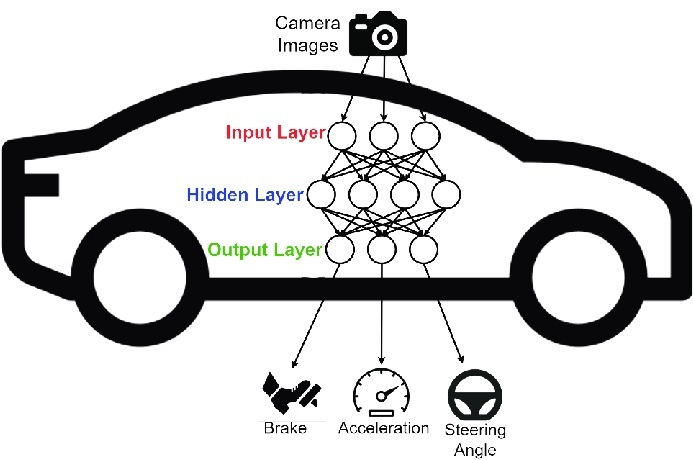
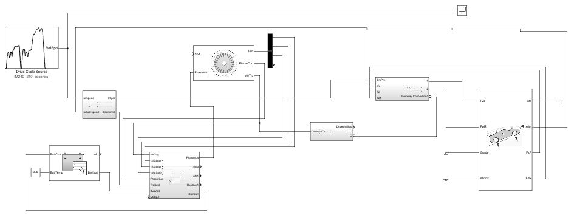
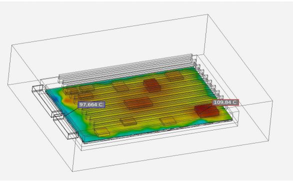
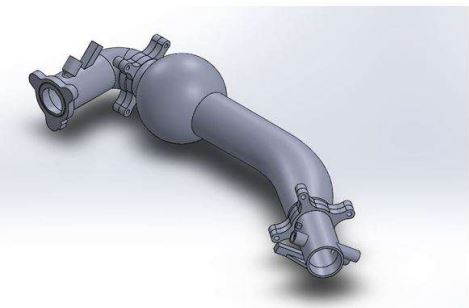

Self-propelled Vehicle Simulation
Development and training of a convolutional neural network for Prediction of steering angle values and for driving the vehicle on a new Track with the UDACITY simulator.
I work at the intersection of automotive diagnostics, vehicle data, backend software and AI-driven vehicle-health products. My experience spans hands-on diagnostic communication and data analysis through technical architecture, cross-functional delivery and customer-facing product capabilities.
Selected work from Carly, where I turn raw vehicle diagnostics into customer-facing vehicle-health products. Diagrams are conceptual and contain no proprietary data.
Problem. Raw diagnostics are not directly useful to customers. A DTC or ECU response has to become something a driver can act on: fault → technical interpretation → issue → severity → repair implication → customer action.
Vehicle / ECU → Diagnostic session → DTC / raw diagnostic data → Data processing → Fault normalization → Fault-to-issue mapping → Severity → Repair-cost estimate → Vehicle-health result → Mobile / Web / Backend
My contribution. Investigated DTCs and diagnostic definitions, designed the post-diagnostic processing architecture, coordinated the technical requirements, and helped establish consistent downstream outputs with data quality and customer impact in mind.
Results. 25% improvement in fault-to-issue matching accuracy · 30% reduction in diagnostic data-processing time · production workload of roughly 177,000 diagnostic reports per month.
Designed and evaluated a multi-stage AI pipeline combining semantic retrieval, embedding-based matching, CrossEncoder reranking and optional LLM adjudication to improve diagnostic fault classification.
Diagnostic fault → Rule / classifier → SBERT retrieval → CrossEncoder reranking → Confidence threshold → LLM adjudication → Standardized issue
Why not simply an LLM? At production volume the trade-offs matter: accuracy, latency, cost, explainability, confidence and scalability. Deterministic and embedding-based stages handle the clear cases cheaply and reproducibly; the LLM is only consulted when confidence is low.
Result. 25% improvement in matching accuracy, mapping faults to ~193 standardized repair categories.
Why it was needed. Duplicated logic, inconsistent outputs across multiple consumers, difficult maintenance and inconsistent diagnostic interpretation.
Diagnostic input
|
Fault processing
|
+--------------+--------------+
| | |
Fault -> Issue Severity Cost estimate
| | |
+--------------+--------------+
|
Aggregator / API
|
Mobile / Web / BackendArchitectural thinking. Centralization, reusable services, API contracts, a single source of truth, separation of concerns, scalability and consistency — systems that turn diagnostic data into reusable vehicle-health capabilities.
Diagnostic tester → CAN → ECUs → Diagnostic response → Parsing / processing → Vehicle health
A representative investigation:
Protocols and tools: CAN, UDS / ISO 14229, KWP, OBD, Bosch KTS, CAN sniffers.
XML-based automotive diagnostic data describing ECU information, DTC definitions, diagnostic services, request / response structures, parameters, data types and vehicle / ECU configuration.
ECU
|-- Diagnostic services
| |-- Read data
| |-- Read DTC
| `-- Clear DTC
|-- DTC definitions
`-- Request / Response
|-- Parameters
`-- Data typesCustomer / product need → Requirements → Technical analysis → Architecture / solution options → Prioritization → Engineering coordination → Validation → Release / rollout → Measurement → Iteration
Across this cycle I clarify requirements, prioritize, track dependencies and technical risks, align stakeholders, coordinate backend, mobile, web, data and AI engineering, validate and roll out, then evaluate KPIs and customer impact — translating technical problems into product decisions.
Diagnostic reports (~177k / month) → Ingestion → Validation → Normalization → Analytics → Diagnostic intelligence → Vehicle health
Analyses. DTC frequency, ECU grouping, missing fault information, standard vs non-standard codes, vehicle / model comparisons, session-level metrics, fault patterns and downstream impact.
Tools. Python · SQL · MongoDB · Elasticsearch · Kibana · AWS
Where I am heading: diagnostics → connected vehicle → software-defined vehicle → technical leadership. Level 1 is what I do today; the later levels are what I am actively building, not production experience.
SOFTWARE-DEFINED VEHICLE
|
+-----------------+-----------------+
| | |
Vehicle E/E Connectivity Cloud platform
architecture (Ethernet, SOME/IP) (vehicle data, OTA)
| | |
+-----------------+-----------------+
|
Vehicle diagnostics
|
Vehicle health / data
|
Customer experienceCAN, UDS, OBD, DTCs, ECU diagnostics, diagnostic data, backend, vehicle health.
DoIP, Automotive Ethernet, SOME/IP, service-oriented architecture, gateways, zonal architecture.
AUTOSAR Classic and Adaptive, middleware, OTA, vehicle / cloud architecture, software lifecycle.
Safety, cybersecurity, architecture governance, supplier / Tier-1 coordination, technical roadmap, platform strategy.
Triaged technical bug tickets, found root causes and routed them to engineering; shortened resolution cycles.
Data-driven vehicle dynamics model (SINDy, machine learning, model reduction) for a model-predictive collision-avoidance framework; crash-scenario simulation with IPG CarMaker and MATLAB/Simulink.
Hyundai Motor Company (Customer Service Specialist, 2018–19) · SMR Automotive (supplier technical assistance, 2018) · Infieon Supermileage (Electrical Engineer, 2014–16).
Education: Master's degree, Automotive Engineering, Technische Hochschule Ingolstadt (2019–2021); B.Tech. Automobile Engineering, SRM University (2014–2018).

Development and training of a convolutional neural network for Prediction of steering angle values and for driving the vehicle on a new Track with the UDACITY simulator.

Development of a Torque Vectoring control system for an Electric formula student vehicle using MATLAB/Simulink and IPG CarMaker.

Development of an Induction Motor powered drive train using MATLAB/Simulink including the control of motor.

Development of an DC motor powered drive using MATLAB/Simulink including the control of motor.

Thermal study of ECU paking unit for better heat dissipation using ANSYS AIM.

Design of an Air intake system for a 4 stroke single cylinder petrol engine for better Performance using SolidWorks, ANSYS AIM and 3D printing.
From my work at Carly and my university projects -
Python, REST APIs, AWS Lambda, MongoDB, Elasticsearch, Git-based deployment, data-quality pipelines.
OBD-II, CAN, UDS/ISO 14229, KWP, DTC analysis, multi-ECU diagnostics, Bosch KTS.
SBERT embeddings, CrossEncoder reranking, LLM-based selection, prompt engineering.
Model based designing of Automotive systems, matlab scripts, HiL, SiL, MiL -simulations.
Model based control design, analysis and implementation, PID, Model Predictive Control.
Modeling and simulation, control of motors, power electronic devices, Performance analysis, energy requirements, operating stratergies.
Modelling virtual vehicle, real-world test scenarios, driver behaviour, complex traffic scenarios, vehicle dyanimcs analysis.
3D parts construction, FEA, CFD, Thermal analysis, Nonlinear Analysis, model Optimization to refine mesh.
2D/3D sketching, Advance assembly, Tolerance dimensioning, Weldment design.
Computer Vision, Deep Learning techniques to build automotive-related algorithms, building and training Convolutional Neural Networks with Keras.
Basic program development using Arduino IDE
I look forward to hearing from you and am always available to answer your questions.